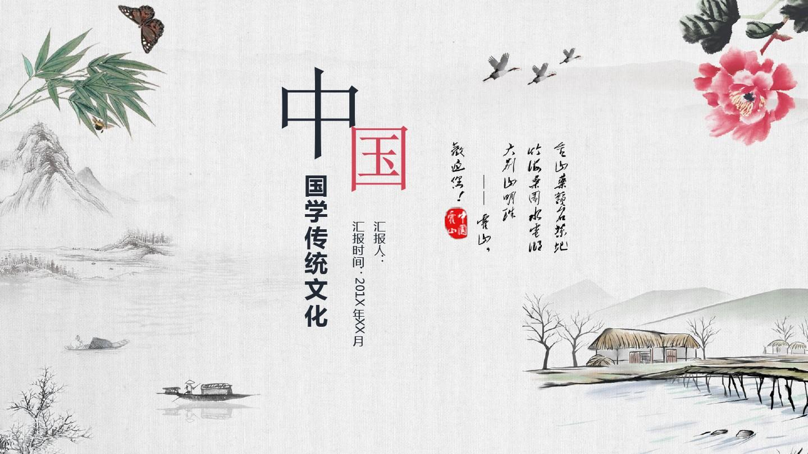
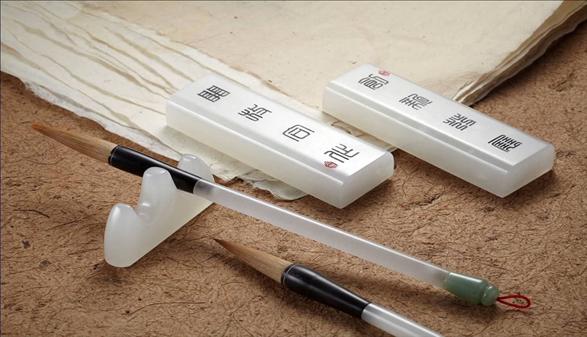
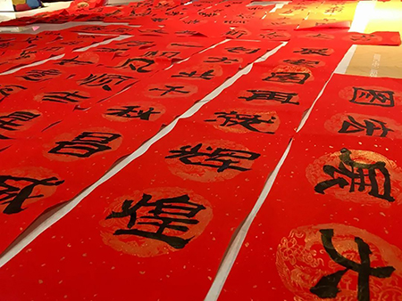
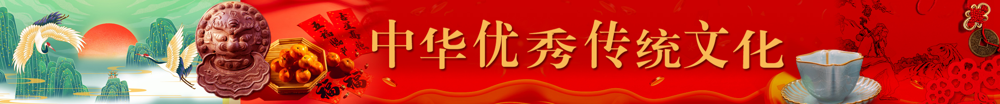
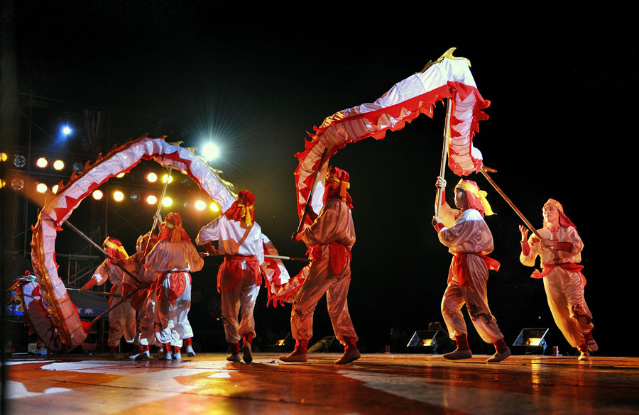
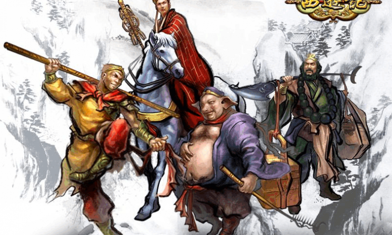
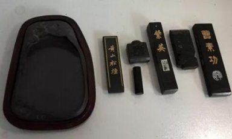

首页
汉语文学
传统礼仪
传统服饰
传统节日
古玩器物
宗教哲学
书画艺术
登录
注册
陈ccc
搜索
评价
我的中心
天气
艺术
书画
书法
皮影
宗教
佛学
人物
百家
传统
剪纸
文房
四宝
中医
中药
内经
文化
文学
名著
诗经
诗词
戏剧
京戏
川剧
昆曲
民俗
茶艺
年画
节气
民风
礼仪
婚嫁
节日
德育
读经
处事
影音
汉字
汉语
对联
成语


热门
更多阅读
中国传统节日——春节
（每个人向往的节日)
传统节日
阅读：10086
评论：999
点赞量：5201314
中国传统节日——中秋节
（寓意着家庭团圆)
传统节日
阅读：10086
评论：999
点赞量：5201314
中国传统文化———茶道
（品茶，更在乎的是一份耐心)
民俗
阅读：10086
评论：999
点赞量：5201314
中国传统文化———京剧脸谱
（戏曲脸谱有着独特的迷人魅力）
戏剧
阅读：10086
评论：999
点赞量：5201314

春联的来历
（春联预示着吉祥如意）
传统节日
阅读：10086
评论：999
点赞量：1314520

春节
更多阅读
中国传统艺术——舞狮子
(舞狮，是中国优秀的民间艺术，古时又称为“太平乐”)
传统艺术
阅读量：(10086)
评论：(999)
点赞量：1314

中国传统艺术——舞龙灯
(舞龙源自古人对龙的崇拜，每逢喜庆节日，人们都会舞龙。)
传统艺术
阅读量：(10086)
评论：(999)
点赞量：1314
中国传统节日——除夕
(除夕，为岁末的最后一天夜晚。每年的这一天万象更替。)
传统节日
阅读量：(10086)
评论：(999)
点赞量：1314
中国民间神话——年兽
(年兽又称"夕"。是古代汉族神话传说中的恶兽。)
民间神话
阅读量：(10086)
评论：(999)
点赞量：1314
诗词歌赋
更多阅读
诗词歌赋欣赏——枯林夜影
（枯林夜影 寒霜枯木一座林， 夜半突传谈笑声。)
文学
阅读量：(10086)
评论：(999)
点赞量：520
《诗经》 国风 · 周南——关雎
(关关雎鸠，在河之洲。窈窕淑女，君子好逑)
文学
阅读量：(10086)
评论：(999)
点赞量：520
人道歌：乾坤浩渺然，沉浮其万物
(人 道 歌 乾坤浩渺然，沉浮其万物。)
文学
阅读量：(10086)
评论：(999)
点赞量：520

中国传统文化经典著作——西游记
(被誉为中国四大名著之一，作者吴承恩)
文学
阅读量：(10086)
评论：(999)
点赞量：520
传统
更多阅读
中华传统艺术——剪纸
(民间剪纸是中国古老的传统民间艺术。它历史悠久，风格独特，深受人民喜爱)
传统艺术
阅读量：(10086)
评论：(999)
点赞量：857
中国传统乐器——古筝
（古筝艺术历史悠久，曲目丰富，体裁广泛，从古至今众多的优秀演奏家更是生生不息。)
传统乐器
阅读量：(10086)
评论：(999)
点赞量：857
群砚之首——端砚
(端砚产于广东肇庆东郊的端溪，材料取于肇庆高要县东南端溪烂河山)
四宝
阅读量：(10086)
评论：(999)
点赞量：857

文房四宝之一——墨
(墨给人的印象似稍嫌单一，但却是古代书写中必不可缺的用品。)
四宝
阅读量：(10086)
评论：(999)
点赞量：857
节气
更多阅读
万物至此皆长大——立夏
(每年5月5日或5月6日是农历的立夏，“斗指东南，维为立夏。)
节气
阅读量：(10086)
评论：(999)
点赞量：857
万物复苏新而生——立春
(每年的公历2月4日左右为立春，是农历二十四节气的第一个节气)
节气
阅读量：(10086)
评论：(999)
点赞量：857
雨生百谷——谷雨
(每年4月19日～21日视太阳到达黄经30°时为谷雨，源自古人“雨生百谷”之说。。)
节气
阅读量：(10086)
评论：(999)
点赞量：857
冬尽春将回——大寒
(大寒由来大寒，是二十四节气中的最后一个节气。 民谚云：“小寒大寒，无风自寒。”)
节气
阅读量：(10086)
评论：(999)
点赞量：857
热门
春节
诗词歌赋
传统
节气
返回顶部